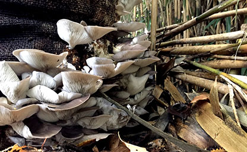
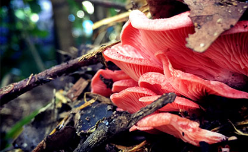
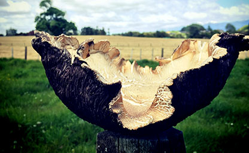

Our Story
Working with basic materials and alongside other interns, Matthew learnt the techniques and absorbed the ideologies of sustainable mushroom farming with a focus on permaculture and passion for the wonderful ways in which fungi fit into our ecosystems. Inspired by the beauty of mushrooms and their mysterious nature, he decided to start his own project.


